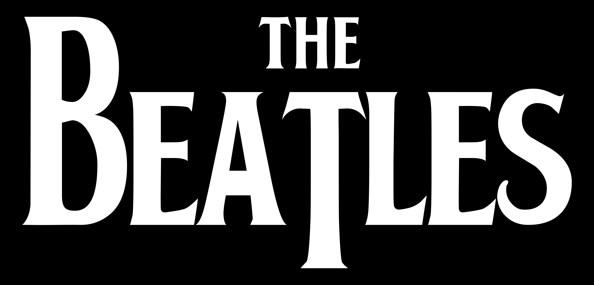
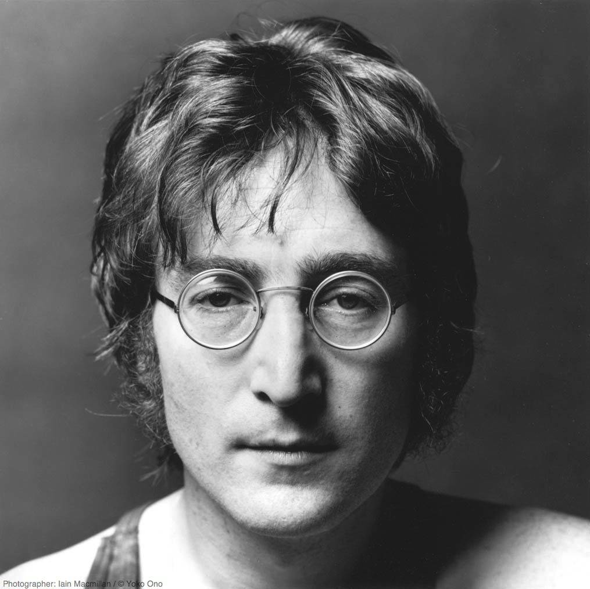
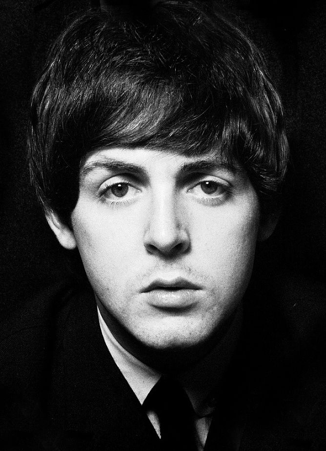
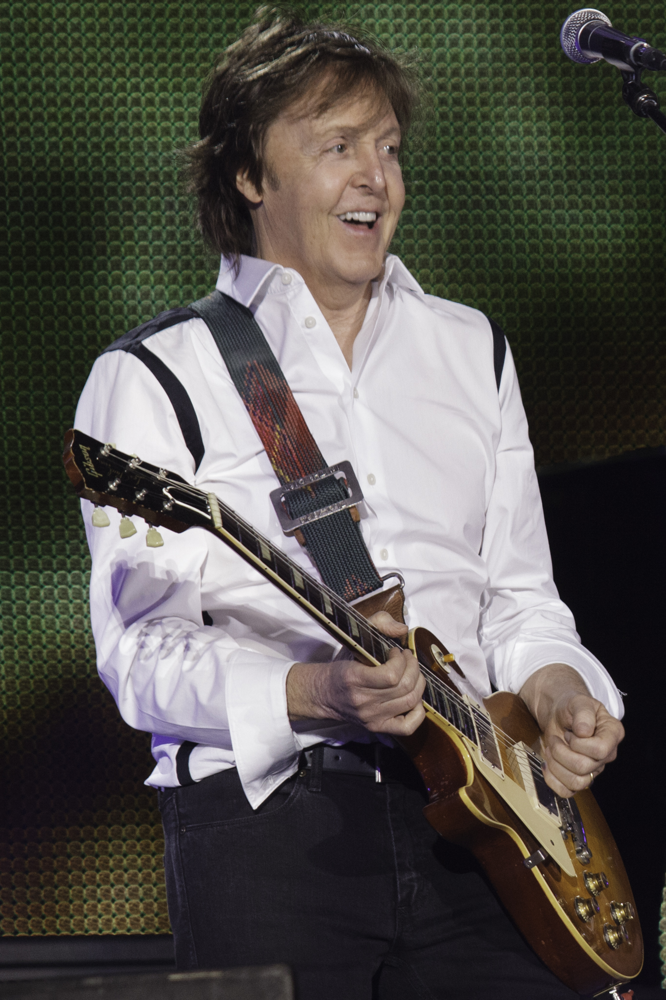
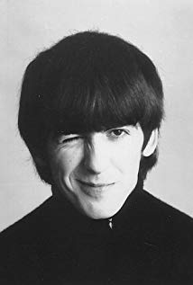
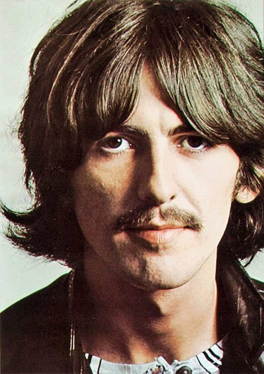
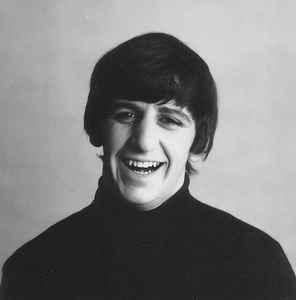
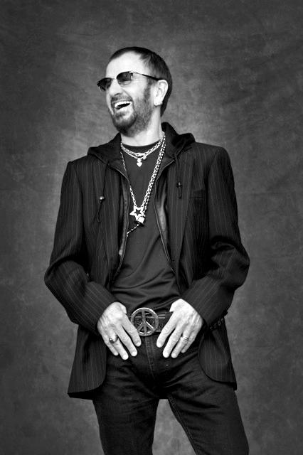

The Beatles
Sužinokite apie šios grupės istoriją bei narius!
The Beatles (Lietuvoje žinomi kaip Bitlai) buvo roko ir pop muzikos grupė iš Anglijos miesto Liverpulio. Nors iš pradžių jų stilius priminė rokenrolą ir skiflle, vėliau grupė išbandė daugybę skirtingų muzikos stilių. Po iširimo 1970 m., visi keturi grupės nariai pradėjo sėkmingas solo karjeras.
The Beatles buvo viena iš finansiškai sėkmingiausių grupių populiariosios muzikos istorijoje. Jie pardavė daugiau nei milijardą įrašų visame pasaulyje. 2004 m. „Rolling Stone“ žurnalo 100 visų laikų populiariausių grupių ir atlikėjų sąraše jie užėmė pirmą vietą. Pasak to paties žurnalo, Bitlų kultūrinė įtaka septintajame XX amžiaus dešimtmetyje buvo milžiniška ir yra akivaizdi iki šių dienų.

Istorija
1957–1962: Iki išgarsėjimo
1957 m. septyniolikmetis Džonas Lenonas su keliais draugais iš mokyklos įkūrė mėgėjišką skiffle grupę. Jie grojo vakarėliuose, mokyklos šokiuose, kino teatruose ir skiffle konkursuose. Tais pačiais metais Lenonas sutiko Polą Makartnį ir po kelių dienų priėmė jį į grupę. 1958 m. į grupę buvo priimtas ir keturiolikmetis gitaristas Džordžas Harisonas. Iš pradžių Lenonas priešinosi Dž. Harisono priėmimui dėl jo jauno amžiaus, bet P. Makartnis to primygtinai reikalavo. Grupės pavadinimas ir sudėtis tuo metu nuolat kaitaliojosi. Sunkiausiai jiems sekėsi surasti gerą būgnininką. 1960 m. likus vos 4 dienoms prieš išvyką į Hamburgą Vokietijoje grupė priėmė būgnininką Pete Best. Hamburge jie pasirašė kontraktą su klubu ir koncertavo jame 6-7 valandas per dieną, 7 dienas per savaitę. Po kelių mėnesių Harisonas buvo deportuotas iš Vokietijos, nes buvo sužinota, jog jis pamelavo Vokietijos valdžiai apie savo amžių. Dar po savaitės Bestas ir Makartnis sukėlė nedidelį gaisrą ir buvo apkaltinti tyčiniu padegimu, todėl taip pat buvo deportuoti. 1961 m. Bitlai grįžo į Hamburgą ir grojo kitame klube. Tuo metu jie įrašė albumą su Toniu Šeridanu kaip jo pritariamoji grupė. Tais pačiais metais grįžę į Liverpulį jie nuolat koncertavo „The Cavern“ klube, kur juos atrado įrašų parduotuvės savininkas Brianas Epsteinas, kuris po kelių mėnesių tapo The Beatles vadybininku. Jis aktyviai bandė gauti grupei kontraktą su įrašų studija, bet tuo metu visi Bitlus atstūmė. Viena iš didžiausių studijų jam pasakė „gitarų grupės greitai išnyks, pone Epsteinai“. Galų gale Džordžas Martinas pasirašė su Bitlais vienerių metų sutartį. Jam grupė neatrodė daug žadanti, bet patiko jų asmenybės. Martinas buvo nepatenkintas būgnininku Petu Bestu, todėl jis buvo pakeistas Ričardu Starkey (žinomu kaip Ringo Starr), kuris retkarčiais koncertuodavo su Bitlais Hamburge.
1962–1966: Šlovė
Pirmasis Bitlų singlas „Love me do“ pasiekė 17 Jungtinės Karalystės dainų topo vietą, o „Please Please Me“ – antrą. 1963 m. kovą buvo išleistas pirmasis jų albumas „Please Please Me.“ Netrukus grupė išgarsėjo ir prasidėjo reiškinys vadinamas „bitlomanija“. 1964 m. vasarį The Beatles pirmą kartą išvyko į JAV. Ten jie pasirodė laidoje „The Ed Sullivan Show“, kur jų pasirodymą žiūrėjo apie 74 milijonai žmonių – maždaug pusė tuometinės JAV populiacijos. Išpopuliarėję Bitlai šiuo laikotarpiu koncertavo visame pasaulyje, išleido daug albumų ir du filmus. 1965 m. jie susitiko ir kartu praleido dieną bekalbėdami ir beimprovizuodami su savo jaunystės dievaičiu Elviu Presliu. 1966 m. per interviu Džonas Lenonas pasakė, kad krikščionių religija miršta ir kad Bitlai „dabar yra populiaresni už Jėzų“. Pareiškimą palydėjo tikinčiųjų nepasitenkinimo banga ir kai kuriuose miesteliuose žmonės netgi pradėjo deginti Bitlų įrašus. Džonas Lenonas atsiprašė už savo komentarus.
1966–1970: Vėlyvasis laikotarpis, iširimas
1966 m. Bitlai nusprendė susikoncentruoti į kūrybą ir nustojo koncertuoti. Tai atsispindėjo jų muzikoje, kuri tapo sudėtingesnė, brandesnė. 1967 m. pabaigoje Bitlai susilaukė pirmų didelių neigiamų atsiliepimų iki tol juos tik gyrusioje Jungtinės Karalystės spaudoje, kai išleido siurrealistinį filmą „Magical Mystery Tour“. 1968 m. pradžią grupė praleido Indijoje studijuodama transcendentinę meditaciją su Maharishi Mahesh Yogi. Šis laikotarpis pasižymėjo kūrybiniu produktyvumu. 1968 m. viduryje, įrašinėjant dvigubą albumą „The Beatles“ (dar žinomą kaip „The White Album“) prasidėjo Bitlų dalijimaisi ir nesutarimai. Ringo Starr, nepatenkintas savo vaidmeniu grupėje, laikinai ją paliko. Jį prie būgnų pakeitė Makartnis. Naujoji Lenono mergina Yoko Ono nuolat būdavo šalia įrašinėjimų metu, kas nepatiko kitiems grupės nariams. Bitlai taip pat jautė, kad Makartnis pradėjo per daug dominuoti. 1969 m. rugsėjį Lenonas pasitraukė iš grupės, bet viešai apie The Beatles iširimą buvo paskelbta tik 1970 m. balandį, savaitė prieš išleidžiant pirmą Makartnio solinį albumą.
Nariai

Sužinokite apie šios grupės istoriją bei narius!
The Beatles (Lietuvoje žinomi kaip Bitlai) buvo roko ir pop muzikos grupė iš Anglijos miesto Liverpulio. Nors iš pradžių jų stilius priminė rokenrolą ir skiflle, vėliau grupė išbandė daugybę skirtingų muzikos stilių. Po iširimo 1970 m., visi keturi grupės nariai pradėjo sėkmingas solo karjeras.
The Beatles buvo viena iš finansiškai sėkmingiausių grupių populiariosios muzikos istorijoje. Jie pardavė daugiau nei milijardą įrašų visame pasaulyje. 2004 m. „Rolling Stone“ žurnalo 100 visų laikų populiariausių grupių ir atlikėjų sąraše jie užėmė pirmą vietą. Pasak to paties žurnalo, Bitlų kultūrinė įtaka septintajame XX amžiaus dešimtmetyje buvo milžiniška ir yra akivaizdi iki šių dienų.

Istorija
1957–1962: Iki išgarsėjimo
1957 m. septyniolikmetis Džonas Lenonas su keliais draugais iš mokyklos įkūrė mėgėjišką skiffle grupę. Jie grojo vakarėliuose, mokyklos šokiuose, kino teatruose ir skiffle konkursuose. Tais pačiais metais Lenonas sutiko Polą Makartnį ir po kelių dienų priėmė jį į grupę. 1958 m. į grupę buvo priimtas ir keturiolikmetis gitaristas Džordžas Harisonas. Iš pradžių Lenonas priešinosi Dž. Harisono priėmimui dėl jo jauno amžiaus, bet P. Makartnis to primygtinai reikalavo. Grupės pavadinimas ir sudėtis tuo metu nuolat kaitaliojosi. Sunkiausiai jiems sekėsi surasti gerą būgnininką. 1960 m. likus vos 4 dienoms prieš išvyką į Hamburgą Vokietijoje grupė priėmė būgnininką Pete Best. Hamburge jie pasirašė kontraktą su klubu ir koncertavo jame 6-7 valandas per dieną, 7 dienas per savaitę. Po kelių mėnesių Harisonas buvo deportuotas iš Vokietijos, nes buvo sužinota, jog jis pamelavo Vokietijos valdžiai apie savo amžių. Dar po savaitės Bestas ir Makartnis sukėlė nedidelį gaisrą ir buvo apkaltinti tyčiniu padegimu, todėl taip pat buvo deportuoti. 1961 m. Bitlai grįžo į Hamburgą ir grojo kitame klube. Tuo metu jie įrašė albumą su Toniu Šeridanu kaip jo pritariamoji grupė. Tais pačiais metais grįžę į Liverpulį jie nuolat koncertavo „The Cavern“ klube, kur juos atrado įrašų parduotuvės savininkas Brianas Epsteinas, kuris po kelių mėnesių tapo The Beatles vadybininku. Jis aktyviai bandė gauti grupei kontraktą su įrašų studija, bet tuo metu visi Bitlus atstūmė. Viena iš didžiausių studijų jam pasakė „gitarų grupės greitai išnyks, pone Epsteinai“. Galų gale Džordžas Martinas pasirašė su Bitlais vienerių metų sutartį. Jam grupė neatrodė daug žadanti, bet patiko jų asmenybės. Martinas buvo nepatenkintas būgnininku Petu Bestu, todėl jis buvo pakeistas Ričardu Starkey (žinomu kaip Ringo Starr), kuris retkarčiais koncertuodavo su Bitlais Hamburge.
1962–1966: Šlovė
Pirmasis Bitlų singlas „Love me do“ pasiekė 17 Jungtinės Karalystės dainų topo vietą, o „Please Please Me“ – antrą. 1963 m. kovą buvo išleistas pirmasis jų albumas „Please Please Me.“ Netrukus grupė išgarsėjo ir prasidėjo reiškinys vadinamas „bitlomanija“. 1964 m. vasarį The Beatles pirmą kartą išvyko į JAV. Ten jie pasirodė laidoje „The Ed Sullivan Show“, kur jų pasirodymą žiūrėjo apie 74 milijonai žmonių – maždaug pusė tuometinės JAV populiacijos. Išpopuliarėję Bitlai šiuo laikotarpiu koncertavo visame pasaulyje, išleido daug albumų ir du filmus. 1965 m. jie susitiko ir kartu praleido dieną bekalbėdami ir beimprovizuodami su savo jaunystės dievaičiu Elviu Presliu. 1966 m. per interviu Džonas Lenonas pasakė, kad krikščionių religija miršta ir kad Bitlai „dabar yra populiaresni už Jėzų“. Pareiškimą palydėjo tikinčiųjų nepasitenkinimo banga ir kai kuriuose miesteliuose žmonės netgi pradėjo deginti Bitlų įrašus. Džonas Lenonas atsiprašė už savo komentarus.
1966–1970: Vėlyvasis laikotarpis, iširimas
1966 m. Bitlai nusprendė susikoncentruoti į kūrybą ir nustojo koncertuoti. Tai atsispindėjo jų muzikoje, kuri tapo sudėtingesnė, brandesnė. 1967 m. pabaigoje Bitlai susilaukė pirmų didelių neigiamų atsiliepimų iki tol juos tik gyrusioje Jungtinės Karalystės spaudoje, kai išleido siurrealistinį filmą „Magical Mystery Tour“. 1968 m. pradžią grupė praleido Indijoje studijuodama transcendentinę meditaciją su Maharishi Mahesh Yogi. Šis laikotarpis pasižymėjo kūrybiniu produktyvumu. 1968 m. viduryje, įrašinėjant dvigubą albumą „The Beatles“ (dar žinomą kaip „The White Album“) prasidėjo Bitlų dalijimaisi ir nesutarimai. Ringo Starr, nepatenkintas savo vaidmeniu grupėje, laikinai ją paliko. Jį prie būgnų pakeitė Makartnis. Naujoji Lenono mergina Yoko Ono nuolat būdavo šalia įrašinėjimų metu, kas nepatiko kitiems grupės nariams. Bitlai taip pat jautė, kad Makartnis pradėjo per daug dominuoti. 1969 m. rugsėjį Lenonas pasitraukė iš grupės, bet viešai apie The Beatles iširimą buvo paskelbta tik 1970 m. balandį, savaitė prieš išleidžiant pirmą Makartnio solinį albumą.
Nariai
Džonas Lenonas (John Lennon; 1940–1980) – ritminė gitara, vokalas

Polas Makartnis (Paul McCartney; 1942) – bosinė gitara, vokalas


Džordžas Harisonas (George Harrison; 1943–2001) – vedanti gitara, vokalas


Ringo Starras (Ringo Starr, tikrasis vardas Richard Starkey; 1940) – būgnai, vokalas

